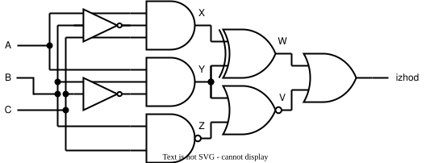

Licenca
To delo je na voljo pod pogoji slovenske licence Creative Commons 2.5:
priznanje avtorstva - nekomercialno - deljenje pod enakimi pogoji.
Celotna licenca je na voljo na spletu na naslovu http://creativecommons.org/licenses/by-nc-sa/2.5/si/. V skladu s to licenco je dovoljeno vsakemu uporabniku delo razmnoževati, distribuirati, javno priobčevati, dajati v najem in tudi predelovati, vendar samo v nekomercialne namene in ob pogoju, da navede avtorja oziroma avtorje in izdajatelja tega dela. Če uporabnik delo predela, kar pomeni, da ga spremeni, preoblikuje, prevede ali uporabi to delo v svojem delu, lahko predelavo dela ponudi na voljo le pod pogoji, ki so enaki pogojem iz te licence oziroma pod enako licenco.

Pretvorba iz logičnega vezja v pravilnostno tabelo
Ko imamo logični izraz ga moramo le še pretvoriti v pravilnostno tabelo ter iz nje razbrati rezultat logične funkcije.
Pred pretvorbo vsa logična vrata označimo s črkami, podobno, kot so označene vhodne spremenljivke – saj izhodi logičnih vrat na enem nivoju predstavljajo vhode logičnih vrat na naslednjem nivoju. Tako dobimo logično vezje, kot ga prikazuje spodnja slika. Dodajmo še to, da bi lahko logična vrata označili tudi z drugimi črkami.

Pretvorba iz logičnega izraza v pravilnostno tabelo
Pri pretvorbi najprej analiziramo logični izraz, da ugotovimo, koliko vhodnih spremenljivk vsebuje – pri tem se ne oziramo, ali so vhodne spremenljivke v logičnem izrazu negirane ali nenegirane.
V našem primeru ugotovimo, da logični izraz $$((A \cdot \overline{B} \cdot C) \oplus (A \cdot B \cdot \overline{C})) + (\overline{(A \cdot B \cdot \overline{C}) + (\overline{B \cdot C})})$$ vsebuje tri vhodne spremenljivke $A$, $B$ in $C$, ki jih zapišemo na levo stran pravilnostne tabele.
Nato na sredino pravilnostne tabele vnašamo rezultate posameznih logičnih vrat od najbolj notranjega proti najbolj zunanjemu nivoju. V našem primeru to pomeni, da najprej izračunamo in v pravilnostno tabele vnesemo rezultate logičnih izrazov $X = A \cdot \overline{B} \cdot C$, $Y = A \cdot B \cdot \overline{C}$ in $Z = \overline{B \cdot C}$.
Nato v pravilnostno tabelo vnesemo rezultata logičnih izrazov $W = X \oplus Y$ in $V = \overline{Y + Z}$.
Na koncu pa na desno stran pravilnostne tabele vnesemo še $izhod = W + V$, ki predstavlja končni rezultat logične funkcije.
Opisana pretvorba iz logičnega izraza v pravilnostno tabelo je prikazana po korakih v naslednji interaktivni dejavnosti:
| $A$ | $B$ | $C$ | $X$ | $Y$ | $Z$ | $W$ | $V$ | $izhod$ |
| 0 | 0 | 0 | 0 | 0 | 1 | 0 | 0 | 0 |
| 0 | 0 | 1 | 0 | 0 | 1 | 0 | 0 | 0 |
| 0 | 1 | 0 | 0 | 0 | 1 | 0 | 0 | 0 |
| 0 | 1 | 1 | 0 | 0 | 0 | 0 | 1 | 1 |
| 1 | 0 | 0 | 0 | 0 | 1 | 0 | 0 | 0 |
| 1 | 0 | 1 | 1 | 0 | 1 | 1 | 0 | 1 |
| 1 | 1 | 0 | 0 | 1 | 1 | 1 | 0 | 1 |
| 1 | 1 | 1 | 0 | 0 | 0 | 0 | 1 | 1 |
1. korak